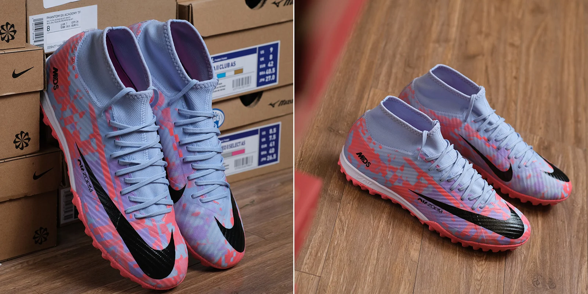
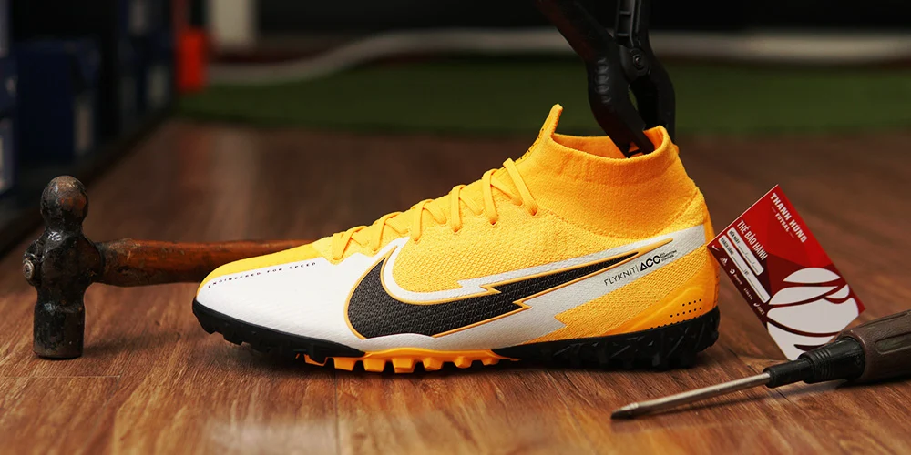
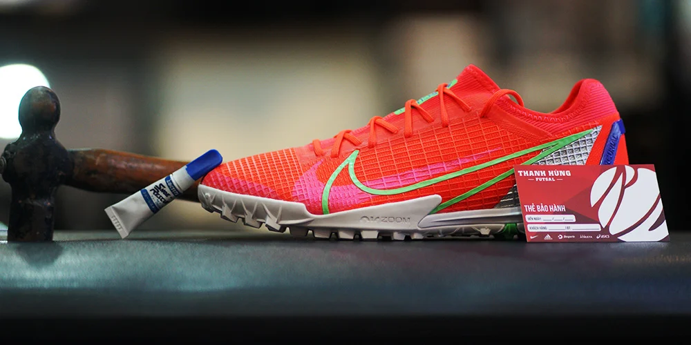

NIKE ZOOM MERCURIAL MDS SUPERFLY 9 ACADEMY TF
{kind=link}
{kind=link}
MÔ TẢ SẢN PHẨM
NIKE ZOOM MERCURIAL SUPERFLY 9 ACADEMY TF - GIÀY ĐÁ BÓNG SÂN CỎ NHÂN TẠO
Tháng 6/2022, Nike chính thức trình làng thế hệ tiếp theo của dòng giày Mercurial mang tên Air Zoom Mercurial. Cải tiến lớn nhất trên thế hệ này nằm ở bộ đệm Zoom Air được thiết kế độc quyền cho bóng đá. Bên cạnh đó, mọi chi tiết trên đôi giày lần này đều được thiết kế nhằm tối ưu hoá lối chơi tốc độ.
Lấy cảm hứng từ lớp thế hệ cầu thủ trẻ đang nâng bóng đá lên một tầm cao mới, Nike chính thức cho ra mắt bộ sưu tập giày đá banh “Generation Pack” cho kỳ World Cup 2022. Đây là bộ sưu tập sẽ bao gồm 3 silo chính của hãng là Air Zoom Mercurial, Phantom GT 2 và Tiempo Legend 9 trong những phối màu vô cùng ấn tượng.
Thông số kỹ thuật
Mẫu giày đá bóng MERCURIAL ZOOM SUPERFLY 9 ACADEMY TF là mẫu giày đá bóng đế TF dành cho sân cỏ nhân tạo 5-7 người.
Phân khúc: Academy (Tầm trung).
Upper làm từ da tổng hợp mềm mại giúp tăng cảm giác bóng. Ở thế hệ 15 này, hãng đã phủ thêm lớp NikeSkin trên bề mặt upper làm tăng độ bám bóng, từ đó có thể kiểm soát bóng và rê bóng tốt hơn. Cấu trúc Speed Cage bên dưới bề mặt upper được làm từ chất liệu mỏng nhưng cực kỳ chắc chắn sẽ mang đến sự ôm chân vừa khít, đồng thời hạn chế sự xê dịch chân trong giày khi thi đấu ở cường độ cao. Phần cổ thun Dynamic Fit sẽ giúp ôm trọn cổ chân của bạn, tạo cảm giác chắc chắn, đồng thời hạn chế tình trạng các hạt cao su rơi vào giày khi chơi bóng.
Gót giày được làm từ vải nhung, mang lại cảm giác ôm chân thoải mái. Cải tiến lớn nhất trên thế hệ này chính là sự xuất hiện của bộ đệm Zoom Air ở phần gót giày. Bộ đệm này không chỉ làm giảm phản lực từ bề mặt sân cứng lên các khớp gối, mà còn mang lại cảm giác êm ái và đàn hồi cho đôi chân. Đế ngoài làm từ chất liệu cao su cao cấp với các đinh dạng Elip lớn nhỏ khác nhau, hỗ trợ khả năng xử lý bóng bằng gầm và tăng cường độ bám sân.
Các cầu thủ nổi tiếng đang mang trên chân dòng giày đá bóng Mercurial: Cristiano Ronaldo, Kylian Mbappe, Robert Lewandowski, Bruno Fernandes, Joshua Kimmich, Vinicius Jr… Bộ sưu tập: Mercurial Dream Speed 006 (02/2023).

CHÍNH SÁCH BẢO HÀNH
Thanh Hùng Futsal luôn nỗ lực mang đến trải nghiệm mua sắm tuyệt vời dành cho Khách Hàng từ việc đa dạng hoá mẫu mã từ nhiều thương hiệu quốc tế nổi tiếng, dịch vụ tư vấn bán hàng online, offline và những dịch vụ hậu mãi không ngừng được hoàn thiện.

ĐIỀU KIỆN BẢO HÀNH
- Thanh Hùng Futsal hỗ trợ khách hàng bảo hành sửa chữa 3 tháng miễn phí:
- Sản phẩm phải do chính Shop Thanh Hùng Futsal phân phối.
- Sản phẩm còn trong thời hạn bảo hành và bị hư hỏng do lỗi kỹ thuật của Nhà sản xuất: hở keo, tróc đế, đứt thun, đứt chỉ.
- Khách hàng phải xuất trình được phiếu bảo hành sản phẩm hợp lệ hoặc có thông tin mua hàng đầy đủ trên hệ thống.
- Thanh Hùng Futsal từ chối bảo hành sản phẩm đối với các trường hợp:
- Không có thông tin hoá đơn mua hàng
- Sản phẩm bị hư hỏng và lỗi từ phía khách hàng gây nên như trầy xước, đế mòn, sản phẩm không còn nguyên vẹn do bị động vật cắn, bảo quản không tốt gây ẩm mốc, phai nắng, nóng chảy.
Sau khi hết thời gian bảo hành, shop vẫn hỗ trợ sửa chữa giày với chi phí hợp lý tại các cơ sở sửa chữa uy tín cho quý khách hàng trong suốt quá trình sử dụng.

THỜI GIAN BẢO HÀNH
Xử lý và trao trả sản phẩm đã được sửa chữa bảo hành cho khách hàng trong khoảng thời gian 05 ngày làm việc kể từ khi tiếp nhận sản phẩm (trừ các tình huống đặc biệt hoặc phải tìm chất liệu khó để thay thế, Shop sẽ liên hệ và đàm phán trực tiếp với khách hàng).